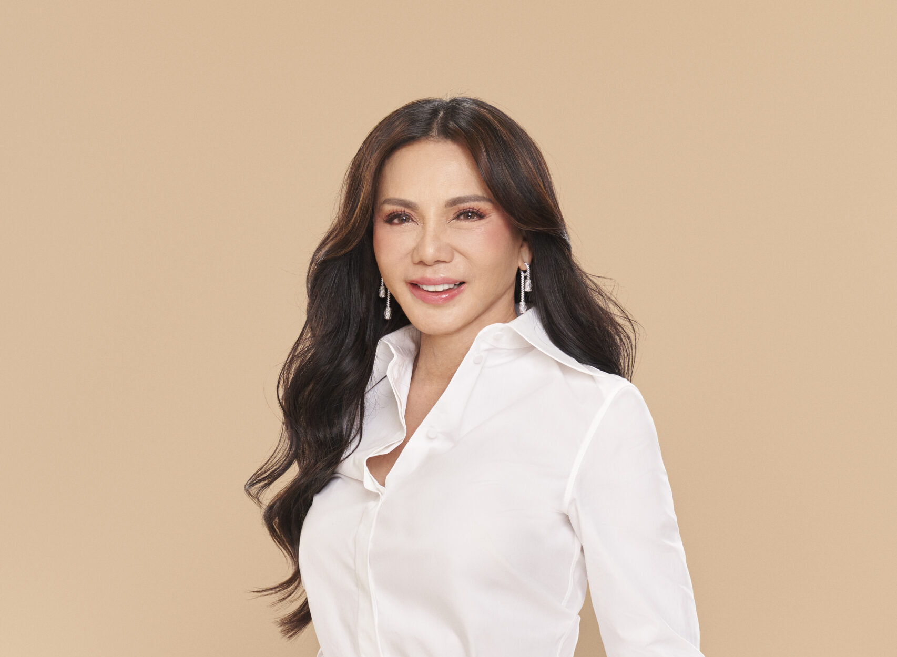
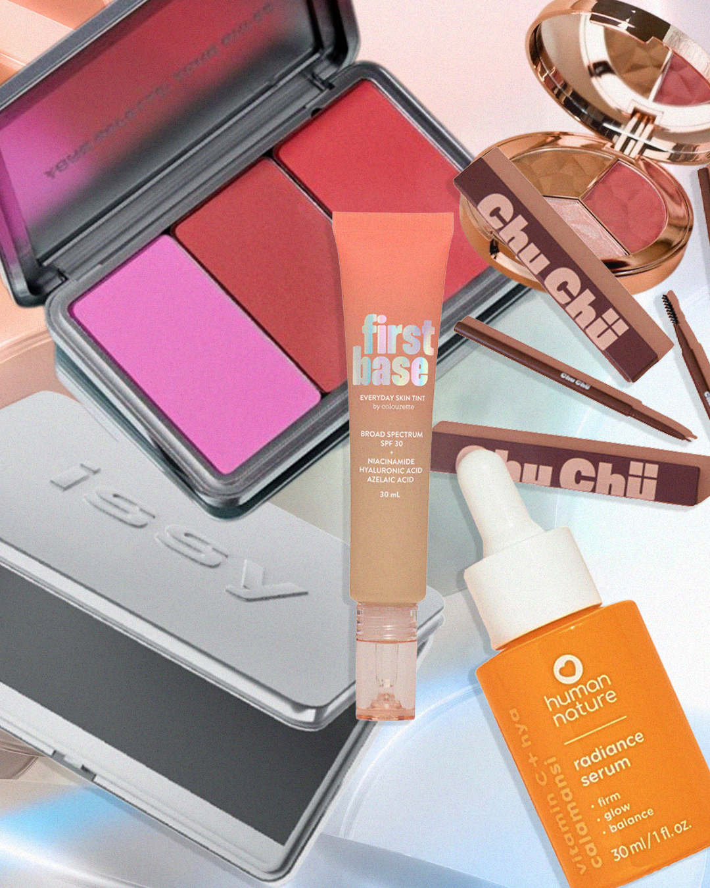
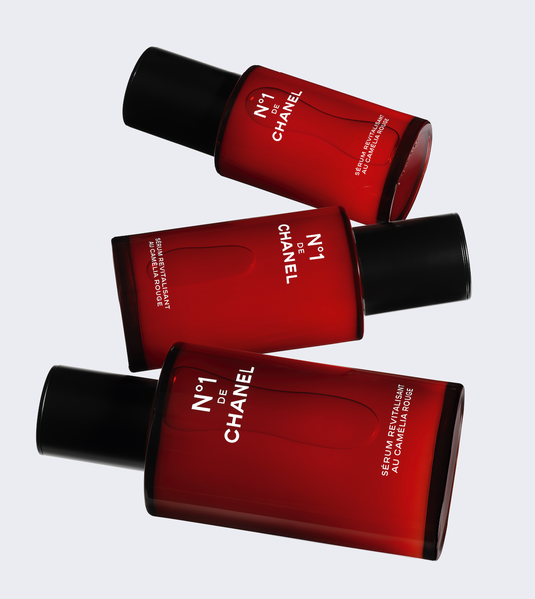
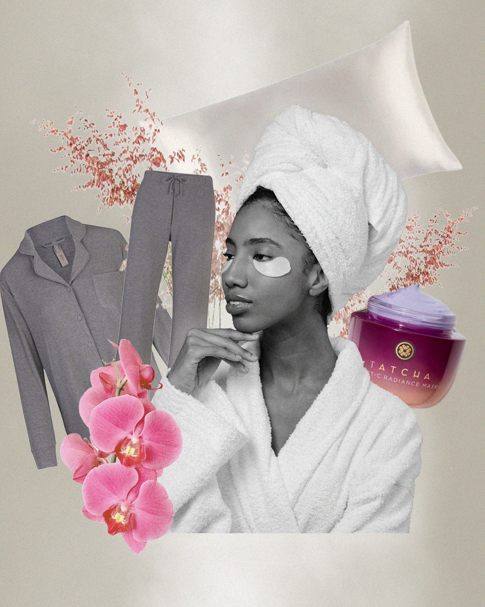

Beauty News
It’s Belo’s World After All
If the start of 2024 is to be any indication, it will certainly be another landmark year for the Belo Medical Group. From receiving accolades from both local and international organizations, to furthering scientific knowledge at the premier dermatology congress, International Master Course in Aging Science (IMCAS), and obtaining recognition for visionary leadership, the empire founded by Dr. Vicki Belo is going from triumph to triumph. With achievements in both the medical and corporate fields, the Belo Medical Group further reinforces its status as the Beauty Hub of Asia.Starting things off, Founder, CEO, and Medical Director Dr. Vicki Belo was lauded as one of the country’s top executives at the recently concluded CEO Awards by The Business Manual last January 28, 2024 at Shangri-la The Fort. Honored amongst other titans of various industries, Dr. Belo’s leadership acumen was recognized by the esteemed publication. Having established her practice with a heart for serving her patients, she continues to break barriers in the industry whilst strengthening the foundations of her growing empire. “The CEO Award is a recognition that Belo is doing something right, and that it’s a name that’s recognized in most of the Philippines as synonymous to beauty, so that means a lot to me,” shares Dr. Vicki Belo. Other CEOs awarded include Sta. Elena’s Alice Eduardo, Jollibee Foods’ Ernesto Tanmantiong, BPI’s Jose Limcaoco, SM Prime’s Jeffery Lim, and more. 
This Raw Beauty Brand is Giving Livelihood to Local Coconut Farmers
Dermtropics is one such local “green beauty” brand that prides itself on its range of products that are all void of any scents. Founder Margaux Arambulo-Lucena was raised by her dermatologist mother Dr. Julieta Arambulo, who imparted one of the tenets of good skincare growing up: to avoid products that use harsh chemicals that can harm the skin over time. What started as personal use of “unscented soap” lead to witnessing wonders for skin concerns like dryness, acne, and hypersensitivity. Seeing this led to the foundation of the fast-expanding Dermtropics, as the local brand has developed a collection of unscented products, all with raw coconut: The raw coconut is mixed with a range of non-toxic ingredients, from colloidal oatmeal in hand and body wash to aloe vera in their low foaming shampoo, argan oil in intensive repair conditioner, and one of the bestsellers, the raw coconut gentle cleansing bar. This raw coconut makes up the central DNA of the brand, in the form of wet-milled virgin coconut oil, considered the purest and most potent of VCOs.

Local Beauty Products to Use on Your Next Night Out That Won’t Break the Bank
When it comes to a night out, the last thing you want to worry about is how long it’s going to take for you to get ready. In fact, prepping for an evening out with friends or family should always be fuss-free and straightforward. Luckily enough, so many local beauty brands have been stepping up their game when it comes to that sector, and it’s safe to say that they have come to our rescue to do just that. Championing diversity, inclusivity, and accessibility with their product range, these homegrown changemakers are just getting started. From an extensive range of skin tint shades to palettes and lipsticks to suit all skin types and complexions, check out these brands and their trustiest products to use on your next night out.
Decoding the Vitality of Skin With Nº1 DE CHANEL
It is often said that prevention is key, and this saying rings ever so true when talking about skincare. Over the years, generations of men and women have worked towards decoding the vitality of one’s skin, analyzing its nuances and complexities, deciphering the mysteries behind anti-aging formulations. And for the very first time, CHANEL Beauty has done just that with their revolutionary Nº1 DE CHANEL Revitalizing Serum. In order to make this possible, CHANEL’s team of experts created the vitality index, a single score that measures the Revitalizing Serum’s performance in terms of the 5 signs of aging: wrinkle visibility, the skin’s radiance, pore visibility, the skin’s elasticity, and how plump the skin appears.
Your 5-Step Guide to Unwinding Luxuriously in the Comfort of Your Own Home
Truly nothing beats the comfort and relaxation lounging around at home brings. After all, it is the only place in the world where you can be your most authentic and raw self! Whether it’s cooking up a hearty meal, or indulging in your guilty pleasures, we’ve curated the perfect step-by-step guide for an elevated at-home experience for the next time you want to treat yourself to a little extra TLC.
